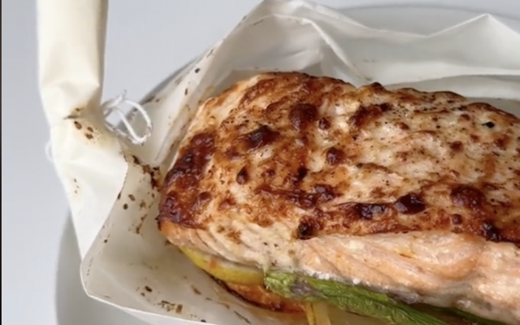

Zalmbootje met pompelmoes en groene asperges

Ingrediënten
- 2 zalmmoten
- 1 pompelmoes
- 1 citroen
- 10 groene asperges
- 1 tl mosterd
- 1 tl honing
- peper
- zout
- olijfolie
Bereiding
-
Vouw het bakpapier als een bootje. Gebruik hiervoor keukentouw om de
eindjes vast te knopen.
- Snij de pompelmoes en citroen in plakjes en leg ze in de bootjes.
- Voeg de asperges en zalmmootjes toe.
-
Meng in een kommetje de olijfolie, mosterd en honing. Kruid af met wat
peper en zout.
- Bestrijk de zalm met de honing-mosterddressing.
- Zet 15 min. in de airfryer op 180°C.
origineel recept te vinden op de volgende link:
website Libelle lekker